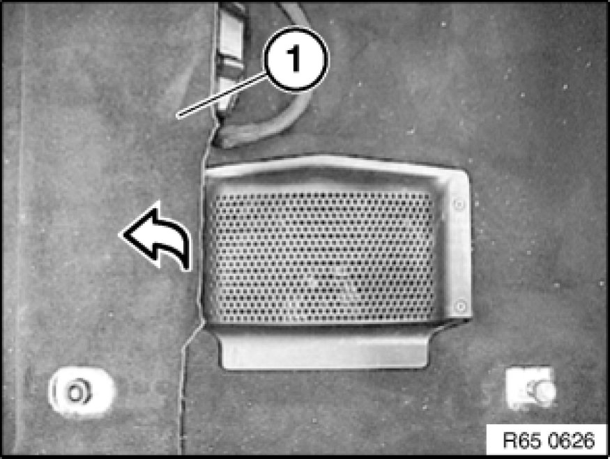
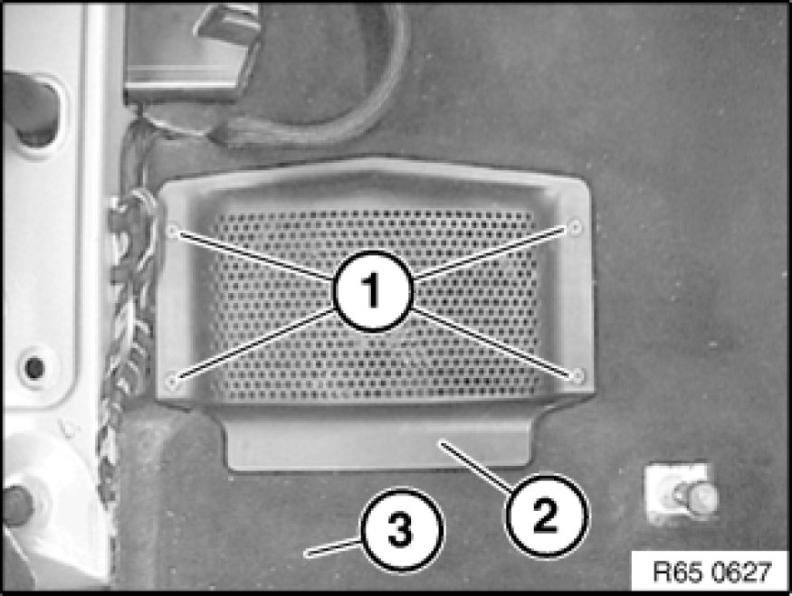
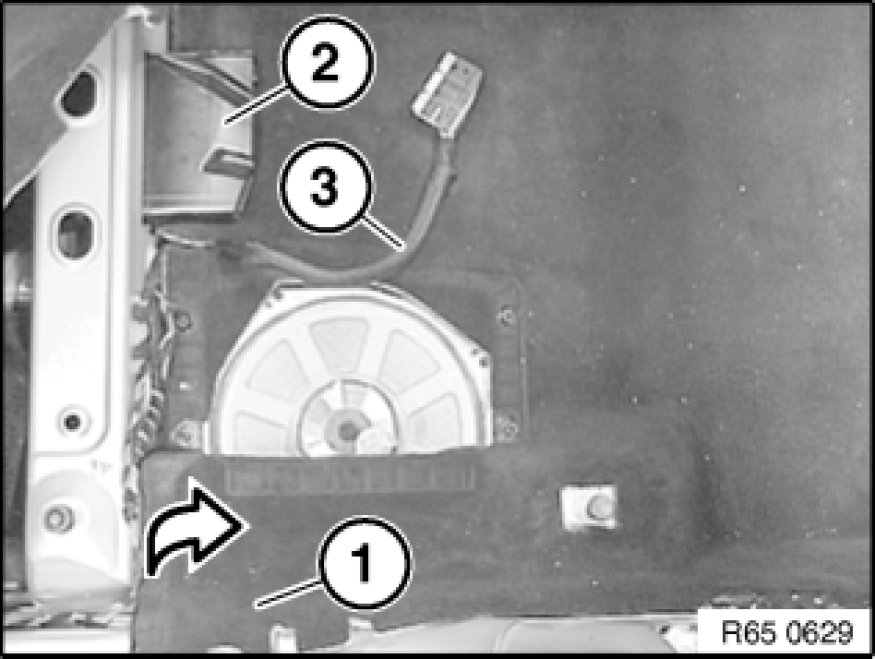
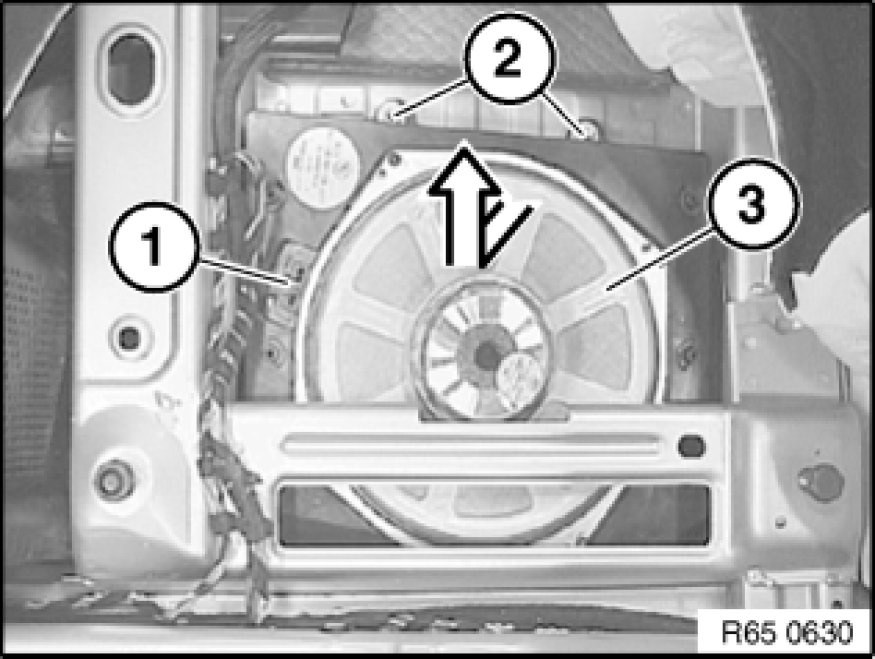
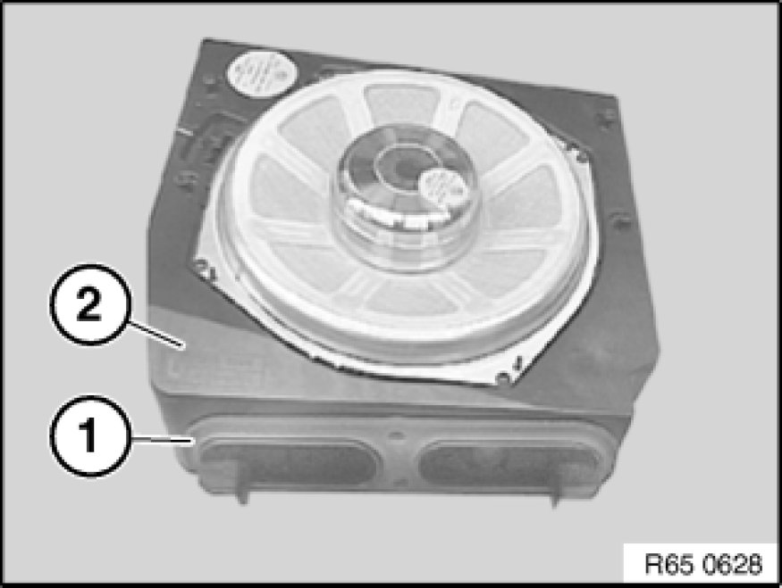

Removing and Installing/Replacing Left or Right Central Bass Speaker (Under Front Seat)
65 12 050 - Removing and installing/replacing left or right central bass speaker (under front seat)

Necessary preliminary tasks:
- Remove front seat
- Remove panel for door pillar Removing and Installing/Replacing Trim for Left or Right Door Pillar (Bottom).

Fold back carpet (1) in direction of arrow.

Release screws (1).
Remove central bass speaker trim (2) from floor trim (3).

Pull out floor trim (1) under rear compartment heating duct (2) and fold back in direction of arrow.
Feed electrical lead (3) out of floor trim (1).
Installation:
Ensure correct cable routing.

Unfasten plug connection (1) and disconnect.
Unscrew nuts (2).
Feed out central bass speaker (3) in direction of arrow and remove.

Installation:
Make sure seal (1) is correctly seated on central bass speaker (2).